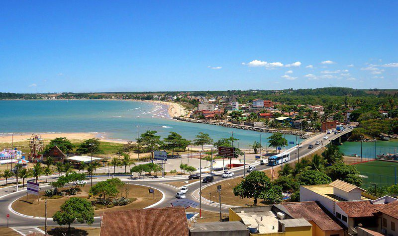

Serra é uma das maiores cidades do Espírito Santo e faz parte da Grande Vitória. A cidade possui grande importância industrial, comercial e turística, além de praias e áreas naturais.
Baixar arquivo DOC - Serra
Baixar arquivo ZIP - Serra
Baixar arquivo PDF - Serra